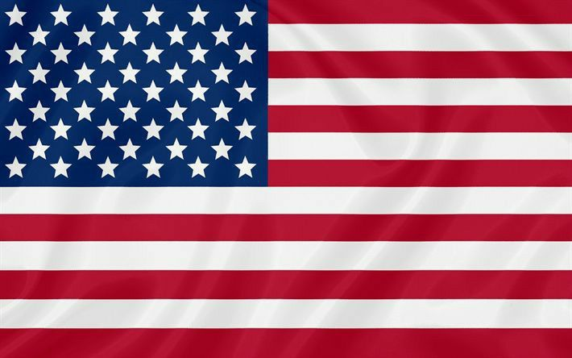
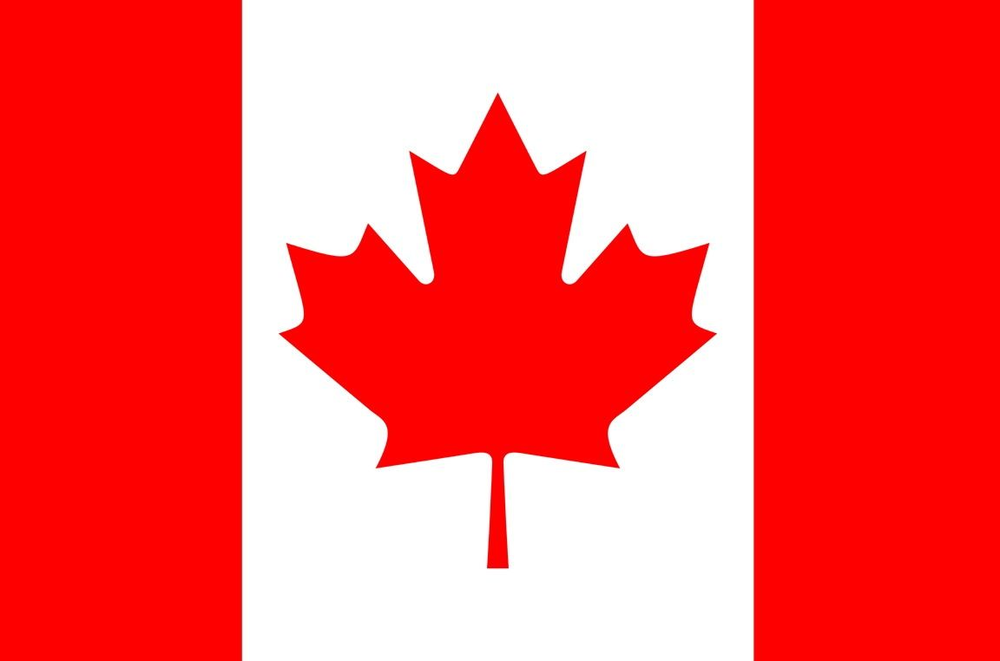

Os três países-sede
Pela primeira vez na história, três países organizam a Copa do Mundo juntos:



Seleções classificadas por confederação
A fase de grupos da Copa 2026 começou em 11 de junho e segue até 27 de junho, com as 48 seleções já em campo. Veja como ficou a divisão por confederação (continente), já com as vagas da repescagem definidas:
| Confederação | Vagas | Seleções |
|---|---|---|
| Países-sede | 3 | 🇨🇦 Canadá, 🇺🇸 Estados Unidos, 🇲🇽 México |
| América do Sul (Conmebol) | 6 | 🇦🇷 Argentina, 🇧🇷 Brasil, 🇺🇾 Uruguai, 🇨🇴 Colômbia, 🇪🇨 Equador, 🇵🇾 Paraguai |
| Europa (Uefa) | 16 (12 diretas + 4 da repescagem) | 🏴 Inglaterra, 🇵🇹 Portugal, 🇭🇷 Croácia, 🇳🇴 Noruega, 🇫🇷 França, 🇩🇪 Alemanha, 🇳🇱 Holanda, 🇦🇹 Áustria, 🇧🇪 Bélgica, 🏴 Escócia, 🇪🇸 Espanha, 🇨🇭 Suíça, 🇹🇷 Turquia, 🇸🇪 Suécia, 🇨🇿 República Tcheca, 🇧🇦 Bósnia e Herzegovina |
| África (CAF) | 10 (9 diretas + 1 da repescagem) | 🇲🇦 Marrocos, 🇩🇿 Argélia, 🇪🇬 Egito, 🇨🇮 Costa do Marfim, 🇹🇳 Tunísia, 🇿🇦 África do Sul, 🇬🇭 Gana, 🇸🇳 Senegal, 🇨🇻 Cabo Verde, 🇨🇩 RD Congo |
| Ásia (AFC) | 9 (8 diretas + 1 da repescagem) | 🇮🇷 Irã, 🇶🇦 Catar, 🇸🇦 Arábia Saudita, 🇰🇷 Coreia do Sul, 🇯🇵 Japão, 🇺🇿 Uzbequistão, 🇯🇴 Jordânia, 🇦🇺 Austrália, 🇮🇶 Iraque |
| América do Norte/Central (Concacaf) | 3 | 🇨🇼 Curaçao, 🇭🇹 Haiti, 🇵🇦 Panamá |
| Oceania (OFC) | 1 | 🇳🇿 Nova Zelândia |
O caminho do Brasil
O Brasil está no Grupo C, ao lado de Marrocos, Haiti e Escócia. Na estreia, em 13 de junho, a Seleção saiu atrás no placar, mas buscou o empate de 1 a 1 com um golaço de Vinicius Júnior. Com o resultado, a Escócia assumiu a liderança do grupo após vencer o Haiti por 1 a 0.
O próximo jogo do Brasil é contra o Haiti, no dia 19 de junho, na Filadélfia. A Seleção encerra a fase de grupos em 24 de junho, contra a Escócia, em Miami.
Entre os chamados "grupos da morte" do torneio estão o Grupo I (França, Noruega, Senegal e Iraque) e o Grupo L (Inglaterra, Croácia, Gana e Panamá) — alguns analistas também colocam o próprio Grupo C do Brasil nessa lista, por ter quatro seleções bem equilibradas.